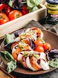

Best Traditional Foods From Italy
To most of the world the best Italian foods seem to be mostly about spaghetti and pizza, and there’s nothing wrong with that, but there are also many other delicious dishes and desserts come from the country. Traditional foods from Italy are full of fantastic flavors that varies from region to region—from hearty, rustic cuisine in the North to fresh and light dishes in the South. From seafood to meat and pasta to risotto, not to mention all the mouth-watering desserts. There really is so much to discover!
| Food | Name | Kind | Rating |
|---|---|---|---|
| Affogato | Dessert | 5 | |
 |
Ameretti | Dessert | 4 |
| Antipasti | Dessert | 4 | |
| Bistecca alla Fiorentina | Main Dish | 5 | |
| Bolognese | Main Dish | 4 | |
| Cannoli | Dessert | 3 | |
|  | Caprese | Appetizer | 3 |
| Carbonara | Main Dish | 4 | |
| Gelato | Dessert | 5 | |
 |
Pizza Margherita | Main Dish | 5 |